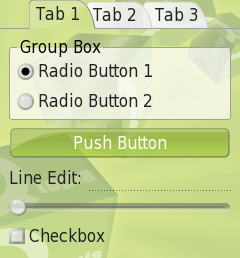

|
Home · All Namespaces · All Classes · Grouped Classes · Modules · Functions | |
The QPhoneStyle class provides a phone look and feel. More...
#include <QPhoneStyle>
Inherits QtopiaStyle.
The QPhoneStyle class provides a phone look and feel.
This style is the default GUI style for Qt Extended Phone Edition. To write a customized style for Qt Extended Phone it is recommended that QPhoneStyle be subclassed. QPhoneStyle provides improved display for widgets in edit and navigation mode. It also applies the global background to Qt Extended widgets.

See also QWindowsStyle.
This enum describes the extra style hints available for QPhoneStyle and derived classes. A style hint is a general look and/or feel hint.
| Constant | Value | Description |
|---|---|---|
| QPhoneStyle::SH_ExtendedFocusHighlight | 0x10000000+1 | A boolean indicating whether the widget with focus should have an extended highlight. The extended highlight will highlight any labels associated with that widget along with the widget itself. |
| QPhoneStyle::SH_PopupShadows | ? | A boolean indicating whether popups (widgets with flag Qt::Popup) should have a shadow. |
| QPhoneStyle::SH_HideMenuIcons | ? | A boolean indicating whether menus should hide any icons associated with menu items. |
| QPhoneStyle::SH_FullWidthMenu | ? | A boolean indicating whether the context menu should extend to the full width of the screen. |
| QPhoneStyle::SH_ScrollbarLineStepButtons | ? | A boolean indicating whether scrollbars should display scroll arrows at the ends. |
| QPhoneStyle::SH_FormLayoutWrapPolicy | QStyle::SH_FormLayoutWrapPolicy | Provides a default for how rows are wrapped in a QFormLayout. This enum value has been deprecated in favor of QStyle::SH_FormLayoutWrapPolicy in Qt/4.4. Returns a QFormLayout::RowWrapPolicy enum. |
| QPhoneStyle::SH_FormLayoutFieldGrowthPolicy | QStyle::SH_FormLayoutFieldGrowthPolicy | Provides a default for how fields can grow in a QFormLayout. This enum value has been deprecated in favor of QStyle::SH_FormLayoutFieldGrowthPolicy in Qt/4.4. Returns a QFormLayout::FieldGrowthPolicy enum. |
| QPhoneStyle::SH_FormLayoutFormAlignment | QStyle::SH_FormLayoutFormAlignment | Provides a default for how a QFormLayout aligns its contents within the available space. This enum value has been deprecated in favor of QStyle::SH_FormLayoutFormAlignment in Qt/4.4. Returns a Qt::Alignment enum. |
| QPhoneStyle::SH_FormLayoutLabelAlignment | QStyle::SH_FormLayoutLabelAlignment | Provides a default for how a QFormLayout aligns labels within the available space. This enum value has been deprecated in favor of QStyle::SH_FormLayoutLabelAlignment in Qt/4.4. Returns a Qt::Alignment enum. |
See also QStyle::StyleHint.
Constructs a QPhoneStyle object.
Destroys the QPhoneStyle object.
| Copyright © 2009 Trolltech | Trademarks | Qt Extended 4.4.3 |